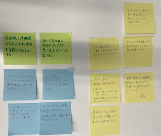
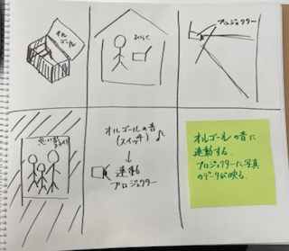

遠隔で操作、管理させることで、どのような新しいサービスが考えられるか？

スイッチという固定概念を消す。
感情という目に見えないものを表現したり、一見必要性を感じられないものを形にする。
膨大なデータの分析は、その時どうIoTがあるべきかのひとつの答えを出してくれる。
IoTの具体例

2023．04．17 水口
思い出に焦点をあてる。
あまり使っていなかったオルゴールの音に反応してプロジェクターが起動。
思い出の写真が映し出される。